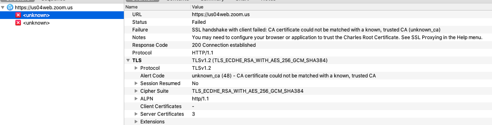

Zoom 简单分析
最近闲来无事儿，找个app学习学习
想起之前某个机缘巧合的情况下，与zoom的大佬们有过简单的交流。就它吧！
Zoom Version: iOS 5.6.1(172)
0x00 去除重打包检测相关
直接使用MonkeyDev 重打包，提示‘LLVM Profile Error: “default.profraw”‘并直接退出
直接丢进ida中看，
有检测embedded.mobileprovision 文件，同时瞄到ptrace检测调试， 伪代码如下：
1 | v4 = objc_msgSend(&OBJC_CLASS___NSBundle, "mainBundle"); |
绕过也很简单：
1 | %hook NSBundle |
绕过以后却一直提示这个
1 | Main Thread Checker: UI API called on a background thread: -[UIApplication applicationState] |
对于强迫症来说可太难顶了，很快啊，我啪就给丫关了：
对抗
- 检测不放在start中，可以多点多次检测
- 检测重打包(检测调试状态 也类似)
1 | //简单版本： |
- 最近看到一个开源库做安全性检测的https://github.com/securing/IOSSecuritySuite， 粗略看了下检测的还算OK，做开发的朋友们有没有用过的 <wink～>
ETC：
其实除了重打包检测和反调试以外，还有越狱检测，但是越狱检测可以直接使用现有的工具（比如Liberty…）直接绕过，这里就不多说了。
0x01 抓包
解决了相关检测问题后，就可以直接调试应用了。既然要看登陆过程，那么抓包就是不可避免的一个步骤。先尝试了直接使用frida hook ssl read/write ，结果什么也没有，就很郁闷。尝试使用Charles设置代理抓包，结果发现：

原来是存在证书校验，具体可以使用wireshark查看：
可以看出是在server hello 完成后客户端检测到证书不匹配，既然问题出在客户端，那么就还是好解决的，拿现成的工具比如ssl kill switch直接干掉就完了，完事收工。
哈哈哈哈，当然不可能这么简单，不然还写什么写。用了ssl kill switch 后也是不起作用的，然后又试了自己hook NSURLSession、Security等系列函数中的检测部分，结果也还是不行，我emo了家人们，多吓人呐。当时在这里卡了挺久，没想到什么原因，更别提解决办法了，就想着先用ida搜搜关键字看能不能找到些线索。
1. 明确无法抓包的原因
在浏览字符串的时候看到了openssl相关关键字，然后搜了下，还挺多：
瞬间就有了点什么想法，立马扭头跟大哥JKSun请教一番。该说不说，大哥就是大哥，很快就帮我确认了我的想法，这丫静态编译的openssl进去，并非使用系统库，难怪各种hook都不起作用。同时还看到在项目目录下有curl7.74.0相关代码目录，这里留意下暂且不表。
2. 解决方式
2.1 一些奇妙的知识
HTTPS经由HTTP进行通信，但利用SSL/TLS来加密数据包。这里https的原理部分不打算细讲，简单说说SSL的握手部分，搞明白这部分是我们后面操作的基础。闲话不多说，先看张图：

这张图讲解了tls的握手流程，我们这里需要注意几点：
- client向server端发送ClientHello数据包（包含支持的ssl版本等基础信息，以及一个随机数 random_num_client）
- server端在收到ClientHello后会向client发送ServerHello数据包（包含最终使用ssl配置等相关信息、server的publicKey和证书，以及一个随机数 random_num_server（如果设置了双向校验相关选项，这里server还会向client发送ClientCertificateRequest，后续会校验））
- client收到ServerHello相关信息后，会使用RSA或DH算法生成第三个随机数（称之为Premaster Secret）然后使用server的publicKey加密后发送给server端
- client和server都知道这三个随机数，且PreMasterSecret 在传输过程中是加密的。利用这三个随机数生成MasterSecret进而生成后续数据传输中使用的SessionKey，我们用下面这张图来表示
想要解开https数据包，我们就得获得这个握手过程中的PreMasterSecret 或者是MasterSecret。
在握手过程中，除了交换random 生成（Pre）MasterSecret 之外，还有个重要的任务就是进行身份认证，也就是我们常说的证书校验。身份认证也分两种：单向认证和双向认证，一般情况下只需要进行单向认证也就是client确认server的身份即可，对于一些重要的业务场景则需要client和server互相确认身份。
2.2 具体方式
自己编译一份对应版本的openssl库，通过特征比对找到对应函数，尔后便可以解决抓包。机灵的小伙伴可以使用ida的sdk生成对应的sig文件，然后就可以直接识别了，我当时好像不太聪明的样子一个一个手动找的特征QaQ
结合上面奇妙的知识，我们可以用的方法就多，具体操作有：
通过hook获取master key 可以解开https的加密数据 –> 可以直接使用wireshark 抓包
绕过证书校验部分， 用burp等工具可以直接抓包 –> 通过burp等代理抓包工具抓包
hook ssl read/write 直接获取通讯数据
1
2
3
4
5
6
7
8
9
10
11
12
13
14
15
16
17
18
19
20
21
22
23
24
25
26
27
28
29
30
31
32
33
34
35
36
37
38
39
40
41
42
43
44
45
46
47
48
49
50
51
52
53
54
55
56
57
58
59
60
61
62
63
64
65
66
67
68
69
70
71
72
73
74
75
76
77
78
79
80
81
82
83
84
85
86
87
88
89
90
91
92
93
94
95
96
97
98
99
100
101
102
103
104
105
//0x01 get client_random, master_secret
var client
var master
// zoom_561_172
// 0xB945B8
// 先通过0xB61518 tls1_PRF 确定版本相关信息，再直接hook 获取master scret
Interceptor.attach(base.add(0xB6176C), {
onEnter: function (args) {
var oob = Memory.readU64(args[0].add(0xa8))
client = oob.add(0xb8)
master = args[1]
},
onLeave: function (retval) {
console.log("CLIENT_RANDOM", arraybuffer2hexstr(Memory.readByteArray(ptr(client), 32)), arraybuffer2hexstr(Memory.readByteArray(ptr(master), 48)))
}
})
//0x02 bypass 证书校验
//0x100B39B4C -- ssl_verify_cert_chain
Interceptor.attach(base.add(0xB39B4C), {
onEnter: function (args) {
console.log(Thread.backtrace(this.context, Backtracer.ACCURATE).map(DebugSymbol.fromAddress).join('\n') + '\n');
console.log('call ssl_verify_cert_chain')
},
onLeave: function (retval) {
console.log("ret:", retval)
retval.replace(1)
}
})
function ssl_session_get_id_func(ssl, len) {
if (len) {
var lenn = Memory.readU64(ptr(ssl.add(0x150)))
Memory.writeU32(len, lenn)
}
return ptr(ssl.add(0x158))
}
// ; SSL_SESSION *__cdecl SSL_get_session(const SSL *ssl)
// __text:0000000000025E64 EXPORT _SSL_get_session
// __text:0000000000025E64 _SSL_get_session ; CODE XREF: _SSL_copy_session_id+18↑p
// __text:0000000000025E64 ; _ssl_validate_ct+D4↑p ...
// __text:0000000000025E64 00 88 42 F9 LDR X0, [X0,#0x510]
// __text:0000000000025E68 C0 03 5F D6 RET
// __text:0000000000025E68 ; End of function _SSL_get_session
function ssl_get_session_func(ssl) {
return Memory.readU64(ssl.add(0x510))
}
function getSslSessionId(ssl) {
var session = ssl_get_session_func(ssl);
if (session == 0) {
return 0;
}
var len = Memory.alloc(4);
var p = ssl_session_get_id_func(session, len);
len = Memory.readU32(len);
var session_id = "";
for (var i = 0; i < len; i++) {
session_id += ("0" + Memory.readU8(p.add(i)).toString(16).toUpperCase()).substr(-2);
}
return session_id;
}
function arraybuffer2hexstr(buffer) {
var hexArr = Array.prototype.map.call(
new Uint8Array(buffer),
function (bit) {
return ('00' + bit.toString(16)).slice(-2)
}
)
return hexArr.join('');
}
// 0x05 SSL_read 0xB40E38
Interceptor.attach(base.add(0xB40E38), {
onEnter: function (args) {
this.message = "SSL_read"
this.buf = args[1]
console.log('call 0xB40E38 ssl_read', args[2])
console.log(" -> ssl_session_id is:", getSslSessionId(args[0]))
},
onLeave: function (retval) {
console.log("SSL_read ret:", retval)
var byteArray = Memory.readByteArray(this.buf, parseInt(retval))
console.log(byteArray, '\n')
}
})
// 0x06 SSL_write 0xB40FEC
Interceptor.attach(base.add(0xB40FEC), {
onEnter: function (args) {
//bad command
console.log('call 0xB40FEC ssl_write', args[0], args[2])
console.log(" ->ssl_session_id is:", getSslSessionId(args[0]))
var byteArray = Memory.readByteArray(args[1], parseInt(args[2]))
console.log(byteArray)
},
onLeave: function (retval) {
console.log("SSL_Write ret:", retval, '\n')
}
})
经过测试三种方式都是可以正常抓包的，这里贴一下抓包内容：
通过zoom.com 重定向到zoom.us，但是抓包的内容是一样的。下面我们就登陆部分做个简单分析
0x02 登陆字段分析
登陆字段的计算部分都是用的C++写的，对这种无符号的代码，分析起来也没什么技巧，就是头铁。在识别加密算法的时候，由于经验不足，就直接上搜索引擎上去搜关键变量，然后结合openssl源码找特征。
总之能hook的就hook，不能hook的再调试分析。
通过捕获的数据包可以看到login相关字段如下：
- ZM-CID==deviceId==cid==hash_macaddress
- Cookies ==>ZM-SESS-KEY + srid(SaaSbeeTestMode00123578)
- password
- ecp
- ZM-DID
在分析这些字段之前，我们还需要一个小tips，zoom中使用了自定义的string结构，姑且命名为CmmCstringT，结构大致如下
1 | // -------------------------------------------------- |
我们hook这个Cmm_CStringT函数，可以得到蛮多有趣的消息。
hash_macaddress
对于hash_macaddress字段直接hook 对应关键字即可分析出流程，
1 | void __fastcall generateDeviceIdentifier(void *bundleIdentifier) |
这里直接写结果：
第一次使用app， 生成DeviceIdentifier，存入keychain/DB， 后续都直接取这个值使用
1
2
3
4
5
6# 第一次启动app的时候，使用这种方式生成id
def gen_identifier(bundleid):
_str=str(uuid.uuid1())+bundleid
_out=hashlib.sha256(_str.encode()).hexdigest()
print (_out)
return _out计算hash_macaddress 字段的值
1
2
3
4
5
6
7
8
9
10
11# 这个identifier 是可以直接从keychain 中读取的， 利用keychain_dumper 或 frida
# 从keychain 中读取64位字符的id当作字符串传入即可
def compute_hash_macaddress(identifier):
if isinstance(identifier, str):
identifier = identifier.encode()
a=hashlib.sha256(identifier).hexdigest()
b=hashlib.sha256(bytes.fromhex(a)).hexdigest()
c=hashlib.sha256(bytes.fromhex(b)).hexdigest()
result=base64.b64encode(bytes.fromhex(c))
print (result)
return result
ZM-SESS-KEY
==》读取hash_macaddress的值，将‘+’‘=’等符号转义，再拼接一个32位的随机字节数组
- 计算拼接后的内容的sha256，记作_input
- 使用内置公钥，RSA加密_input，得到密文 _encd
- 将 _encd base64编码，再拼接’,v1’，得到最终数据，用作Cookie中的ZM-SESS-KEY 字段，再拼接一些常量即可
1 | def RSA_enc(): |
password
password和ecp字段使用的方式都是一样的，取一个key来加密我们输入的password，ecp的key 是生成的一个udid。
但是passwprd字段的key却让我一通好找，最终使用的方式是在进入函数分配好内存（new(0xC28uLL)) 后便对存储key的区域下内存写入断点，断下后再查看调用栈，最终明白使用的key便是计算ZM-SESS-KEY 字段时的加密数据明文。
==》
- 使用计算Cookie字段中的_input 当作是AES 加密使用的key
- 将上面的key计算sha256，所得结果用作aes_key，将aes_key计算hash用作iv
- iv长度与分块大小一致，恒为16， 使用的aes加密模式为aes_128_cbc，所以aes_key 实际上为sha256(_input)[0:16]
1 |
|
看到这里，很明显的数据使用对称加密算法加密、密钥使用非对称算法加密。
脚本丢在GitHub上了。